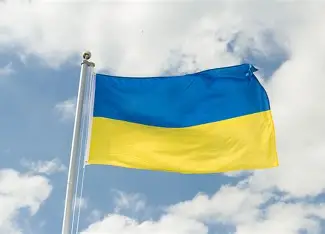

AI & Media
Kunstmatige intelligentie verandert hoe nieuws wordt gemaakt, verspreid en gecontroleerd. Een tweesnijdend
zwaard: AI maakt nepnieuws gevaarlijker, maar helpt ons ook het te herkennen.
AI als gevaar
- Generatieve AI schrijft in seconden overtuigende nepberichten
- Deepfake-video's bootsen echte politici of beroemdheden na
- Nepafbeeldingen zijn niet langer van echt te onderscheiden
- Sociale-media-algoritmen verspreiden sensationele content sneller
- Geautomatiseerde botnetwerken verspreiden desinformatie op schaal
AI als oplossing
- Detectie-algoritmen herkennen gemanipuleerde afbeeldingen
- Factcheck-tools vergelijken claims automatisch met bronnen
- Deepfake-detectie analyseert micro-expressies en artefacten
- Browserextensies waarschuwen bij twijfelachtige websites
- AI-modellen traceren de oorsprong van virale content
Hoe werkt deepfake
Een deepfake wordt gemaakt met een techniek genaamd GAN
(Generative Adversarial Network). Twee AI-modellen werken samen:
één maakt nep-beelden, de ander probeert ze te onderscheiden van echte.
Dit proces herhaalt zich totdat het resultaat bijna niet meer te detecteren is.
Casestudies
Oekraïne deepfake
Een nepvideo toonde president Zelensky die zijn troepen opdroeg zich over te geven. De video werd snel ontkracht.

AI-stemmen in verkiezingen
In de VS werden AI-gegenereerde telefoontjes verstuurd met een nepstem van president Biden.

Nep-Paus-foto
Een AI-afbeelding van de Paus in een witte Balenciaga-jas ging viraal en werd door velen voor echt aangezien.